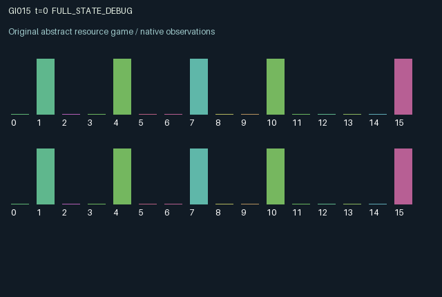

GI015 / LEGACY_ARRAY
astra-d2-00015 — Private sensing, a colliding broadcast channel, and delayed claims
2 agents5 actions16 observation columns32 original horizonRuntime: PASS
Release verification episode
Untrained uniform legal actions. Actual JAX state sampled along the full original episode; full-state debug camera. No human performance or learning claim.

Run this game
crucibles play --game 15
Start Python locally, then open the address printed by the terminal. Installation, multiplayer, takeover and keyboard controls →
Objective, rewards & ending
Exact task contract
{
"termination": "Original kernel t >= 32; see mechanism and source"
}Declared per-step reward bounds: -1.0 to 1.0. Observability: source_defined.
Rules
Original mechanism document (historical status wording retained)
# astra-d2-00015 — Private sensing, a colliding broadcast channel, and delayed claims Status: authored source only. Isolated validation and duplicate/mechanism review are pending. ## Causal transition A hidden binary regime flips with probability 0.12 per transition. Actions are 0 recharge, 1 scan, 2 broadcast one's stored sample, 3 deploy a claim on regime 0, and 4 deploy a claim on regime 1. Scanning or deployment consumes one battery unit and requires a positive balance; recharging adds one unit up to capacity three. Other ineffective actions remain legal. A scan observes the newly evolved regime with independent error probability 0.15. The private sample persists with its age. Broadcasting sends the stored sample, not a fresh scan, and publishes its true age. A single broadcaster succeeds, while simultaneous valid broadcasters collide and neither changes the published reports. Agents observe how many valid broadcasts were attempted on the latest transition. A deployment is irrevocable and settles two subsequent transitions later against the regime then prevailing. If both agents settle claims on the same regime simultaneously, a correct claim receives half of the uncongested success payment. Thus publishing useful information can help the peer while also attracting a competing claim. Channel contention and payoff congestion are separate interactions. ## Information The regime, peer battery, peer private sample, and peer pending claims are hidden. Each role observes its battery, private sample with a validity bit and age, both published reports with validity and ages, its two claim slots, recent channel contention, own latest gross settlement, and time. The public age is the age of the measurement itself, so rebroadcasting cannot present an old measurement as new. Observation columns 0–15 are time/32, battery/3, private sample value, private validity, private age/32, own published value, own publication validity, own publication age/32, peer published value, peer publication validity, peer publication age/32, own far claim encoding, own near claim encoding, channel attempts/2, own last gross settlement, and remaining time/32. Claim encoding is 0 for empty, 0.5 for regime 0, and 1 for regime 1. Invalid samples use value zero together with a zero validity bit. ## Incentives and reward bound A correct claim pays 0.55 alone or 0.275 under simultaneous same-target settlement. A wrong claim pays -0.25. An effective scan costs 0.025, a deployment costs 0.015, and a valid broadcast attempt costs 0.005 even when it collides. These three actions are mutually exclusive, so rewards lie within [-0.275, 0.55]. The battery has no terminal value and queued claims receive no settlement after the 32-transition horizon. This is related to generic decentralized sensing, communication congestion, and costly prediction. Its proposed dependencies combine stale private measurements, honest-aged public reports, collision-mediated information availability, and commitments whose eventual payoff depends on the other agent's synchronized commitments. No novelty, compiler, pool eligibility, or learning-effectiveness claim is made. ## Interface and provenance Two agents, sixteen float32 observations each, five always-legal actions, and a 32-transition episode. Reset uses its explicit key for the hidden regime. Each step splits its explicit key for the regime transition and measurement errors. This parentless training-context proposal used no parent source, experiment outcomes, or shared feedback capsule.
Commands
0Action 0; see mechanism and source
1Action 1; see mechanism and source
2Action 2; see mechanism and source
3Action 3; see mechanism and source
4Action 4; see mechanism and source
Roles & abilities
agent_0 Original legacy agent; see mechanism and source
agent_1 Original legacy agent; see mechanism and source
Observation permissions
Training receives only the original observation rows. Role cameras use declared visibility; debug cameras are explicitly marked. Local benchmark records log debug exposure and role takeover history.
Exact observation layout
[]
Entity visibility & attributes
[]
Actual verification & provenance
Per-game execution receipt
{
"game": "gi015",
"status": "PASS",
"verification_revision": 2,
"source_sha256": "dbf4eef1dff47ab8f864926924597926e914b7dc40f7a2866090d1080880c01b",
"seed": 20261101,
"runtime": {
"jax": "0.4.38",
"numpy": "1.26.4",
"devices": [
"TFRT_CPU_0"
]
},
"dimensions": {
"num_agents": 2,
"observation_size": 16,
"num_actions": 5,
"max_steps": 32
},
"checks": {
"eager_reset": {
"status": "PASS",
"seconds": 0.6734743118286133
},
"observation_spaces_legal_masks": {
"status": "PASS",
"seconds": 0.13752985000610352
},
"eager_step": {
"status": "PASS",
"seconds": 1.0500006675720215
},
"jit_reset": {
"status": "PASS",
"seconds": 0.2589583396911621
},
"jit_step": {
"status": "PASS",
"seconds": 0.4180762767791748
},
"eager_jit_integer_parity_float_measurement": {
"status": "PASS",
"seconds": 0.0010001659393310547
},
"jit_vmap_reset": {
"status": "PASS",
"seconds": 0.5011017322540283
},
"jit_vmap_step": {
"status": "PASS",
"seconds": 0.46420931816101074
},
"outer_autoreset_api": {
"status": "PASS",
"seconds": 0.5682342052459717
},
"full_original_horizon_episode_and_render": {
"status": "PASS",
"seconds": 1.134639024734497
}
},
"human_scores": null,
"browser_controls": "PENDING",
"failures": [],
"elapsed_seconds": 5.696712255477905,
"float_parity_max_abs": 0.0,
"numerical_parity": "EXACT",
"raw_terminal_absorbing": "NOT_PART_OF_ORIGINAL_LEGACY_CONTRACT",
"terminal_outer_reset": "PASS",
"episode_steps": 32,
"scripted_random_returns": [
0.7500000512227416,
-0.36999997310340405
],
"terminal": true,
"demo_information": "FULL_STATE_DEBUG",
"demo_frames": 33,
"render_roles_checked": 2
}Chromium control verification
{
"game": "gi015",
"status": "PASS",
"human_scores": null,
"engineering": true,
"checks": [
"catalog_selected_and_real_native_reset",
"dom_queue_and_native_step",
"second_participant_ownership_and_native_joint_step",
"all_roles_individually_controllable_no_role_cap",
"explicit_debug_camera",
"release_to_pure_ai_without_reset"
],
"ui_sha256": "15b5861d23b3c42811865c954d5a988280bbfd21cf8e93754be2437a027158c5",
"seconds": 2.7751317024230957
}Original identity and file hashes
{
"id": 15,
"key": "gi015",
"title": "astra-d2-00015 — Private sensing, a colliding broadcast channel, and delayed claims",
"summary": "",
"tags": [],
"family": "legacy_array",
"dimensions": {
"num_agents": 2,
"observation_size": 16,
"num_actions": 5,
"max_steps": 32
},
"source_sha256": "dbf4eef1dff47ab8f864926924597926e914b7dc40f7a2866090d1080880c01b",
"manifest_sha256": "1908f4e1eb94651b5222c7910d4cf2526dbaefbaaac473d65f86040b86313725",
"files": [
{
"file": "candidate.py",
"sha256": "dbf4eef1dff47ab8f864926924597926e914b7dc40f7a2866090d1080880c01b",
"bytes": 5218,
"origin": "work/exp_2/astra_generation/discovery_v2/initial/candidate_00015/attempt_00/candidate.py"
},
{
"file": "mechanism.md",
"sha256": "e0b46b5ece13160ae6180ca1d29160dace64653a02cc9a65acb23baba7ddbaee",
"bytes": 3559,
"origin": "work/exp_2/astra_generation/discovery_v2/initial/candidate_00015/attempt_00/mechanism.md"
}
],
"original_status": "LEGACY_SOURCE",
"original_saved_replay": false,
"release_validation": "PASS",
"human_scores": null,
"browser_validation": "PASS"
}